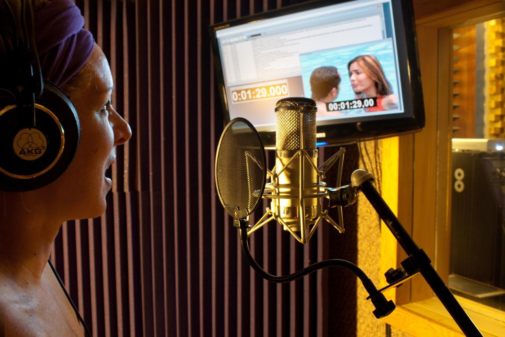

Curiosidades e Bastidores
Qual foi o primeiro filme dublado no Brasil?
A história da dublagem no Brasil começou Em 1938. Chegava no país o filme Branca de Neve e os Sete anões, da Disney. Até então, todos os filmes eram legendados. Os cantores Dalva de Oliveira e Carlos Galhardo foram convidados para dar vozes em português aos personagens, no que se tornou a primeira dublagem do país. No Brasil, a arte de dublar começou, a princípio, nos desenhos animados. Somente em 1938, no Rio de Janeiro, que o primeiro filme começa a ser dublado no país. O longa em questão era A Branca de Neve e os Sete Anões do Walt Disney.
Dublagem X legendas: qual o impacto cultural?
-
Preservando a autenticidade linguística:
A dublagem envolve a substituição do diálogo original por dublagens traduzidas gravadas por atores locais. Ele se esforça para fornecer uma experiência de visualização perfeita, sincronizando os movimentos dos lábios e mantendo as nuances culturais do material de origem. Essa abordagem permite que os espectadores ouçam os personagens falarem em seu idioma nativo enquanto capturam as emoções e as performances vocais.
As legendas, por outro lado, envolvem a exibição do texto traduzido na parte inferior da tela. Este método mantém o áudio original, permitindo que os espectadores ouçam as vozes autênticas dos atores. As legendas fornecem uma tradução mais direta e precisa do diálogo, preservando a autenticidade linguística e oferecendo aos espectadores a oportunidade de interagir com idiomas estrangeiros.
-
Imersão cultural e acessibilidade:
A dublagem pode facilitar a imersão cultural removendo totalmente a barreira do idioma. Os espectadores podem se concentrar no visual e na narrativa sem a necessidade de ler as legendas. Ele permite que um público mais amplo aprecie e compreenda o conteúdo estrangeiro, abrindo portas para o intercâmbio e valorização cultural.
As legendas fornecem uma sensação de autenticidade, mantendo o áudio original. Eles permitem que os espectadores ouçam as nuances nas performances dos atores, incluindo inflexões de voz, sotaques e expressões emocionais. As legendas promovem uma conexão mais profunda com a cultura e o idioma originais, preservando a integridade artística do material de origem.
-
Promovendo a compreensão global:
A dublagem tem o poder de superar as divisões culturais, tornando o conteúdo estrangeiro mais identificável e acessível ao público em todo o mundo. Ao ouvir vozes familiares, os espectadores podem se conectar emocionalmente com os personagens, suas histórias e os aspectos culturais representados no conteúdo. A dublagem promove empatia e compreensão, promovendo um senso de unidade global.
As legendas abraçam a diversidade cultural, preservando o idioma original e permitindo que os espectadores apreciem as variações linguísticas. Eles oferecem uma oportunidade valiosa para aprender novos idiomas, entender diferentes sotaques e vivenciar diversas expressões culturais. As legendas incentivam a curiosidade, o respeito e uma compreensão mais ampla das culturas globais.
Os Bastidores
Como é o processo de dublagem em estúdio?
No momento da dublagem de um produto audiovisual dentro de um estúdio, temos um tripé formado pelas figuras dos dubladores, do diretor de dublagem e do técnico de áudio.
Os dubladores: os dubladores são atores registrados no SATED (Sindicato dos Artistas e Técnicos em Espetáculos de Diversões) com seus registros de ator emitidos pela DRT (Delegacia Regional do Trabalho). São os profissionais que vão dar vida e interpretar o texto traduzido/adaptado das mais diversas produções audiovisuais (filmes, séries, documentários, etc…), e diferentemente do que se observa com os atores que trabalham na televisão, cinema ou teatro, por exemplo, os dubladores não ensaiam previamente para viver seus personagens.
Na realidade, todos os dubladores são atores, mas são atores que se especializaram nessa modalidade específica da dublagem, assim como outros se especializam em outras áreas como tv, cinema ou teatro, por exemplo. É imprescindível para esse profissional ter uma boa dicção e o poder de conseguir passar toda a emoção possível para o seu personagem somente por intermédio de sua voz.
Diferentemente do que acontecia décadas atrás em que os dubladores gravavam suas cenas em conjunto, hoje em dia, cada um as grava de forma separada em horários agendados pelas casas de dublagem. Em relação ao momento das gravações, uma vez escalado para um dado papel, o dublador precisa encarnar o personagem com o qual está tendo contato pela primeira vez, e com o texto traduzido a sua frente (em cima de uma bancada), tem de sincronizar as falas traduzidas com a boca do personagem.
O dublador precisa ter bons reflexos, de modo que consiga alternar o seu olhar entre o texto traduzido e o produto que será dublado, exibido em uma tv, as falas dos personagens são concebidas previamente pelo tradutor, mas é comum haver ajustes durante as gravações, como reavaliar o tamanho das falas ou deixar alguma mais natural caso esteja muito truncada.

O diretor de dublagem: é o profissional que coordena todo o processo de dublagem com o técnico de áudio ao seu lado dentro do estúdio.
Em um primeiro momento, esse profissional que também é dublador, recebe o script já traduzido/adaptado e uma cópia do vídeo do produto audiovisual que irá dirigir. Com a tradução em mãos, ele minuta o filme (alguns estúdios podem pedir isso ao tradutor) e o divide em loops ou anéis. Esses loops são trechos de mais ou menos 20 segundos e são o que determina o total de horas remuneradas dos dubladores.
Feito isso, o diretor faz a escalação dos dubladores que julga serem os mais adequados para interpretar os personagens de uma produção audiovisual. No entanto, há casos em que testes de voz precisam ser realizados para determinar as vozes dos principais personagens. Em casos assim, o diretor escolhe três dubladores que acredita serem boas escolhas para um certo personagem e envia essas amostras de voz para decisão final do cliente. Uma vez dentro do estúdio para iniciar as gravações, o diretor costuma deixar os dubladores a par da melhor maneira possível sobre a produção que será dublada e fornece informações sobre seus personagens. Suas principais tarefas são coordenar a interpretação dos dubladores e o sincronismo e estimativa labiais. O sincronismo labial, é o processo no qual as falas dubladas precisam ser encaixadas perfeitamente na boca dos personagens, desde o momento em que ela abre até o momento em que ela fecha. Essa tarefa de coordenar o sincronismo e o tamanho das falas pode requerer uma atenção em maior ou menor grau, dependendo do trabalho realizado previamente pelo tradutor.
Uma curiosidade bem interessante é que não é pré-requisito dominar uma língua estrangeira para exercer a função de diretor de dublagem, de modo que erros de tradução podem passar despercebidos, caso o tradutor não tenha feito um bom trabalho de pesquisa.
Técnico ou operador de áudio: profissional que trabalha ao lado do diretor de dublagem na parte da técnica e que realiza a gravação das falas dos dubladores, seguindo as diretrizes dadas pelo diretor. Ele manuseia o protools, o sistema de computador utilizado atualmente nos principais estúdios de gravação e que facilita enormemente o processo de dublagem, pois reúne uma gama de ferramentas para edição, mixagem e masterização. Graças ao protools, há vários canais de áudio disponíveis para captar o som dos vários personagens presentes em um produto audiovisual e é possível diminuir ou aumentar a duração/tamanho de alguma fala, por exemplo.

Após o término das gravações de todas as falas de uma produção, os mixadores nos estúdios precisam mixar as falas dubladas, os efeitos sonoros e a trilha sonora de forma harmoniosa, de modo a compor o produto final dublado. Essa última grande etapa de pós-produção é fundamental para se obter a “magia de abstração da dublagem”. Caso o estúdio não tenha um bom aparato tecnológico e bons operadores e mixadores, a produção pode sair com sons não bem equalizados, causando estranheza ao público. Infelizmente, vemos casos assim em produções mal dubladas em que o som aparenta “estar para fora”, parece algo a parte do filme. Quando isso acontece, fica evidente que a produção está sendo dublada e isso acaba com a magia de abstração que a dublagem tenta trazer.
Por fim, após o fim desse processo, o estúdio envia o produto dublado para o canal que fez o pedido de dublagem e, caso haja algum erro no que diz respeito ao áudio da produção ou em relação à tradução, o produto volta para o estúdio para se realizar o que se chama de retakes, ou seja, consertos. O canal sinaliza para o estúdio as cenas com problemas e os dubladores precisam redublá-las.
Não adianta ter um bom texto e não ter bons dubladores para interpretá-lo de forma convincente, assim como não adianta ter bons dubladores e um texto ruim e truncado. E também não adianta ter um ótimo texto e ótimos dubladores sem bons profissionais na parte técnica. É necessário que haja uma convergência de bons profissionais atuando nessas três grandes etapas para que se possa chegar a uma produção dublada de qualidade e são por produções assim que devemos almejar!